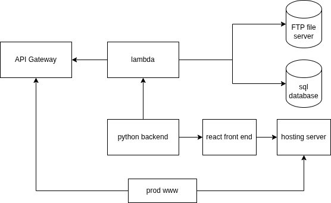
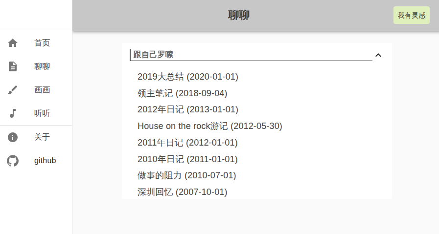
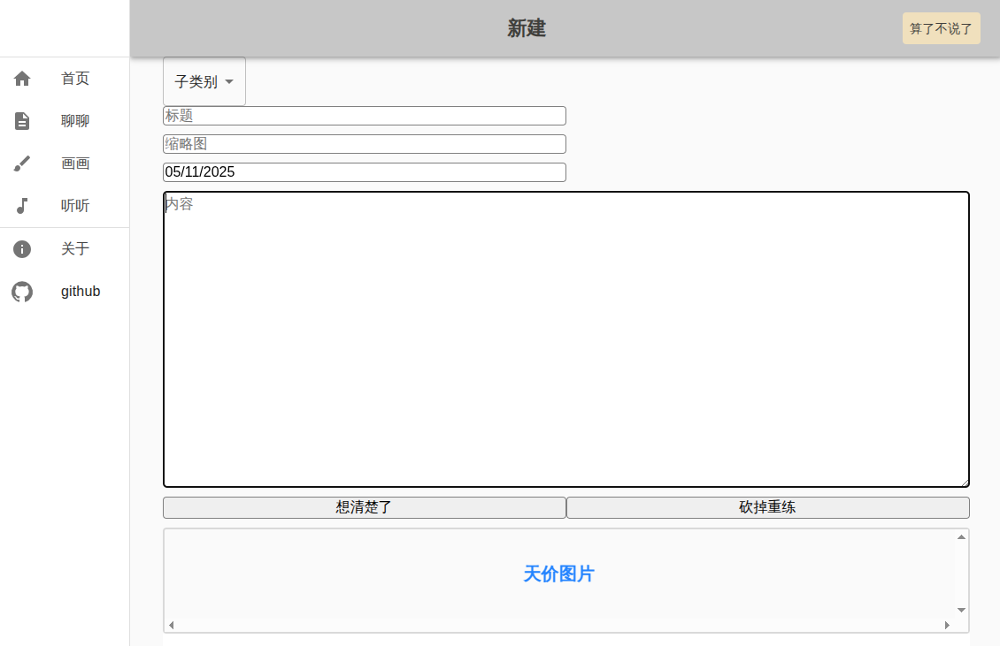
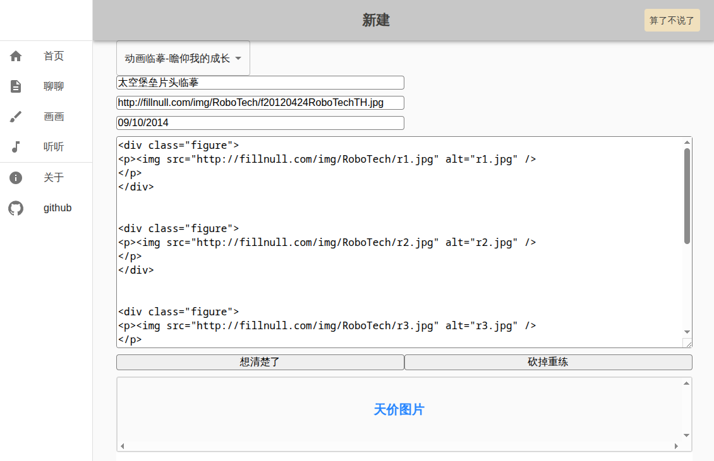

从零开始做个人网站，一个失败的项目回顾
大致框架

大致如此，时隔太久记不清细节。python+fast api搭后端，react搭前端，围绕 AWS API Gateway实现前后端的衔接。由于流量小，AWS几乎可以白嫖。需要花钱 的是网站托管部分，因为需要提供数据库和FTP支持。FTP用来存取图片，数据库 用来存取网站各个部件之间的关系，比如每个目录下的列表、标题和文本的对应等等。
示例
效果图，渲染出来的效果与普通网站无异，方便浏览。

编辑页面1。新建文档，基本功能都有，比如选择类别，撤销，上传图片。遗憾 的是，上传图片大小限制在3M，再往上加就要特殊处理。本质上是传输文件的限 制，不容易解决。这一条就把手机高清图上传给墙壁了。

编辑页面2。上传图片后，文件路径会自动加入到编辑器。此处需要直接写html。

开发细节问题示例
有很多细节问题，边做边冒出来，举一些栗子。
- 为了不让文档直接被访问，需要在网站托管服务器端做一些设置。
- 因为跨服务器（aws vs 网络托管服务），要设置互相信任。
- 网络托管服务不提供免费https需要的数字证书。这一条其实如果一开始知道， 就直接劝退了，如果不是想写个全栈练练手的话。
- 我至今用不好React，我不知道前端程序猿怎么活下来的。
项目失败分析
即使不考虑https的问题，这个网站方案也可以说是失败了。无他，难用。虽然 勉强说基本功能都有，但就是全方位的用着难受。它的定位很尴尬，如果说是定 位非技术用户，那么图片的非所见即所得就是大问题，上传之后只能看到个路径， 编辑器里无法预览。如果说是定位技术人员，那它的很多东西就是南辕北辙。虽 然本地可以开发和测试，但由于整个网站的结构存储在远程数据库里，本地无法 直接修改就非常不方便，没法一个编辑器开N个文档这样。
要说闪光点，就是能写到简历里，面试的时候吹一下全栈写了个活网站。